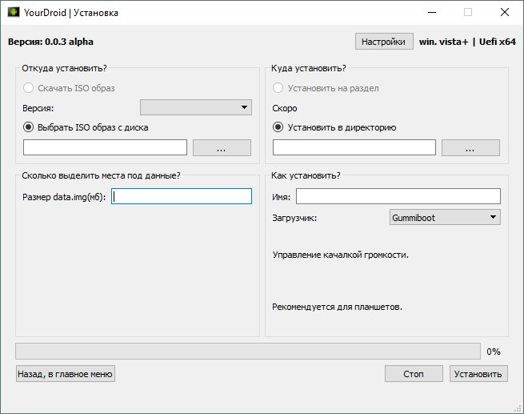

Установка Android на ПК
Программа, устанавливающая образ Android на ПК

Что такое YourDroid?
Это программа с открытым исходным кодом, котороя устанавливает Android на компьютер под управлением ОС Windows или Linux как вторую операционную систему.
YourDroid устанавливает x86 версию Android и добавляет его в загрузчик основной ОС или устанавливает GRUB как загрузчик.
Почему YourDroid?
- Простой и понятный интерфейс
- Возможность выбрать путь установки Android:
- В директорию
- На флеш-накопитель
- В отдельный раздел
- Работает на вашей основной операционной системе
- Можно установить любую выпущенную версию Android x86
- Работает на виртуальных машинах
- Работает на ПК с UEFI, BIOS, GPT, MBR и др.
Мы в социальных сетях